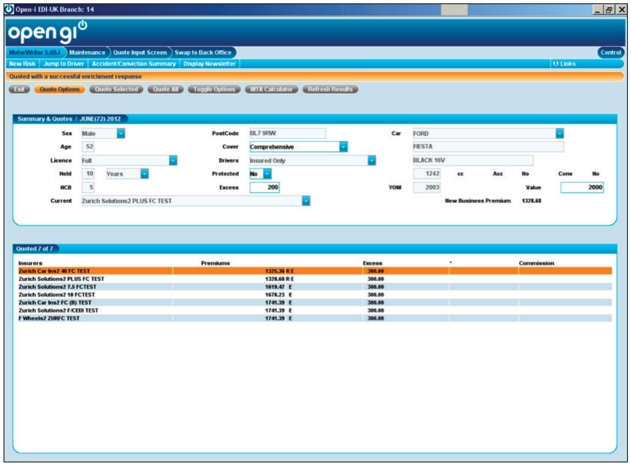
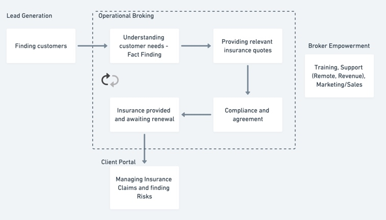
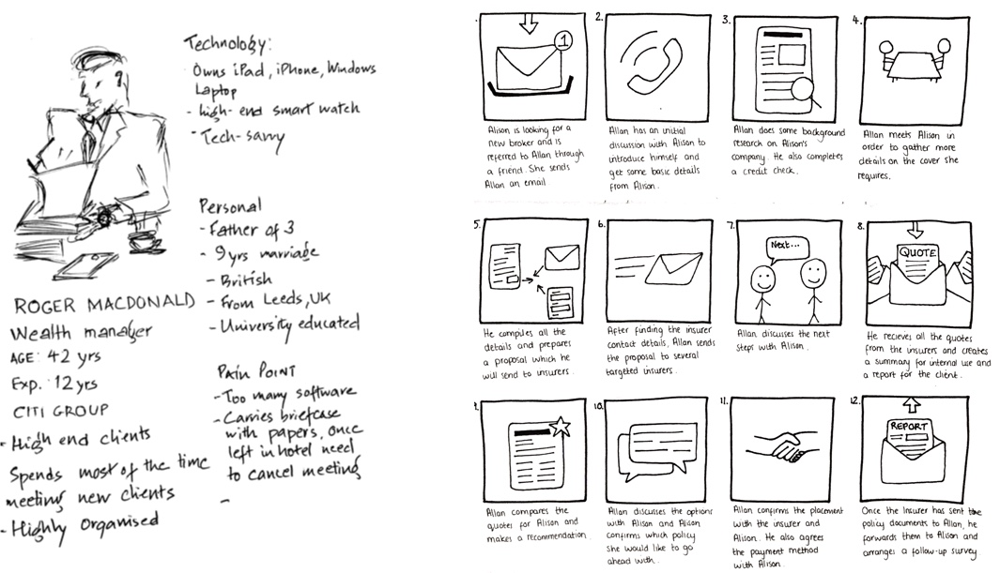
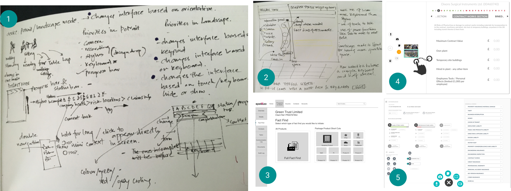
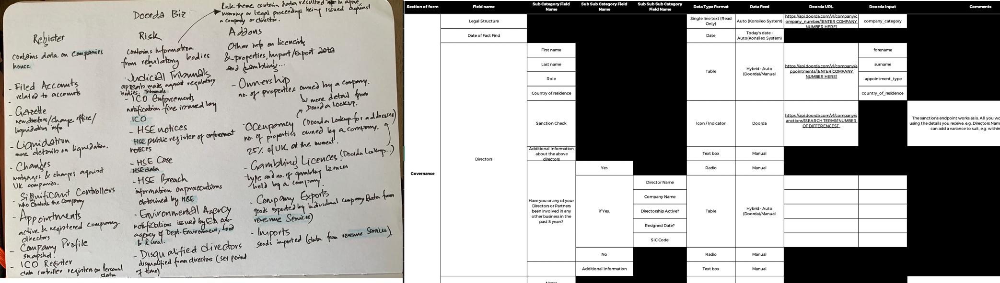
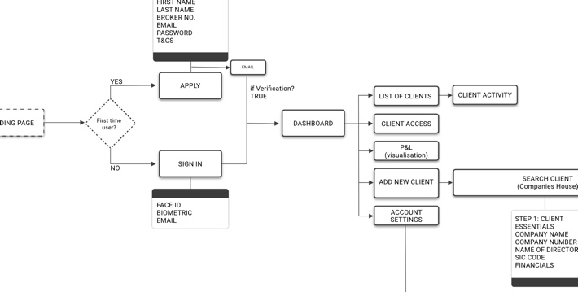
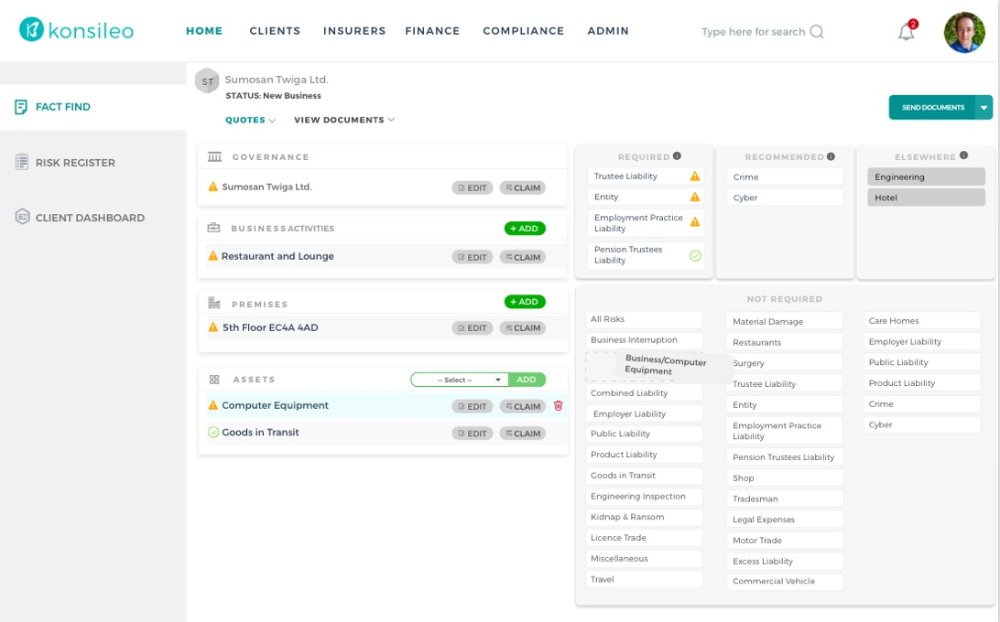
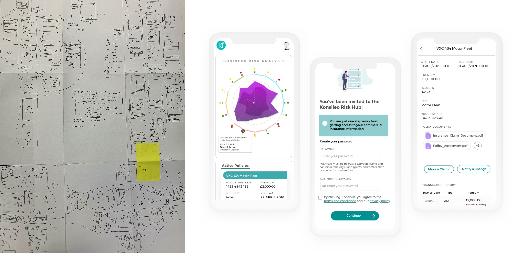

home / Konsileo
Konsileo
To comply with my non-disclosure agreement, I have omitted and obfuscated confidential information in this case study. All information in this case study is my own and does not necessarily reflect the views of Konsileo
Outcome
Since, its launch a year ago, Konsileo’s system has been used to place around £5 million in premiums with only 8 brokers using it and more broker are opting to join the system every day.
i.e. 55% more than the average (£600k+ premium per broker)
CONTEXT
Strict regulatory requirements (FCA) // Archaic process // Age old industry // Used to workarounds
The first business insurance policy was written in the 17th Century. After hundreds of years, brokers still rely heavily on huge
paper files, processes that are archaic with many workarounds in place, and old legacy systems which cause huge inefficiencies
resulting in brokers spending roughly 60% of their time on repetitive administrative and operational tasks.
There are companies that tried to ‘improve’ insurance broker’s process or move them to a ‘better’ IT system, but all these
had resulted in adding yet more admin and paperwork to their already endless list of tasks.
In addition, changing the way an entire industry has operated for hundreds of years also mean changing the process brokers has
become so familiar with during their career.

OpenGI, a popular software used by insurance broker (see picture).
RESEARCH
Understanding the end-to-end journey
Through multiple rounds of user interviews and focus groups with the insurance brokers we identified various operational issues faced by them during their daily work.
Followed by this, I ran task analysis sessions to find out inefficiencies in the process and understand different ‘workarounds’ to overcome them.
Throughout the focus group and tasks analysis processes, I encouraged my whole team to participate to develop empathy towards the users
and understand the operational tasks.
The Affinity map aided us to showcase trends, themes, concerns and areas of opportunity for discovery and improvement.
Few pain points as mentioned by users:
“When I visit a client for Fact finding I need to carry around 20 different paper forms because each type of insurance (e.g. professional indemnity, cyber liability) is captured on a separate form.”
“The forms are very rigid and sometimes I need to capture information that is not asked for (or there is no space for) on the form.”
“I have to re-key the same information into several different IT systems”
Framing the problem
Triangulating between research on existing tools, interviews, observations and user data provided greater validation and insights. I identified that in the whole processes fixing the form would be the best way to approach this and this also made a storng business case.

Fact find is the most repetitive and time consuming operational tasks, that every broker would do as the first step in knowing about a business client.
It is a form filling session where an insurance broker would visit clients premises to understand about the business and gather the essential information in multiple complex paper forms (55+ pages).
How might we create a seamless experience of the fact-finding process that would reduce redundancy and the loss of information?

CO-DESIGNING FACT FIND
Ideating and prototyping
It was important that the brokers feel part of the solution, so I invited them for a design studio workshops.
The goal of the workshop was to explore a wide set of ideas and also create a shared vision to move forward within a short amount of time.
During the sessions, individually and then collaboratively the team ideated and started sketching their ideas.
To make the session interactive and soak them fully into the design, I introduced them to Wizard of Oz and Role-playing. I choose Wizard of Oz methodology
as this would give the participant full-freedom of interacting with different kind of props and the observers a good understanding of what
would be the best option for the devices we could choose. Each one of them would role-play their sketched ideas to replicate a real scenario.
By the end of the sessions, there was a convergance of ideas towards using a handheld device similar to a Microsoft Surface or iPad with ability to connect write quickly (keyboard), move things workarounds (touchscreen) with camera facilities, which would be portable as well as would be easy to connect to their large sized monitors once they were in office.
Furthermore a need of open data integration so that the brokers can easily auto-fill information based on the company data available in the public domain.

Multiple iterations
I took this idea to develop a modular desktop interface that could easily be ported to a surface or iPad.
Data feed:
Further, I also took the role of business analyst collaborating with the CEO and the brokers to list the different data feeds that would make their life easy. I listed them in Excel and researched and found 39 different data sources to provide a complete overview of a company, such as Companies house API, ICO registers, Google maps, flood registry, crime data etc.

Understanding various data feed for integration

Showing part of a Konsileo process flow map (v0.2)
Process map:
Meanwhile I also mapped out a flow diagram to communicate my ideas to the engineering team. Bringing them into the process at the beginning of the design phases proved valuable as we were able to collaborate and further simplify the flow.
TRANSFORM & TEST
Working with the management, development team and product manager, we defined a product roadmap to determine the release sprints.
I then created a backlog of items in Jira formed our first sprint. I worked on the user journeys and screen designs based on the order of priority according to the roadmap. I used Sketch Design software to create hi-fi mock-ups and detailed the specifications in the Jira tickets and conducted walk-throughs with the development team out in Serbia.

Fact Find

Prospecting Module

Client Portal Module